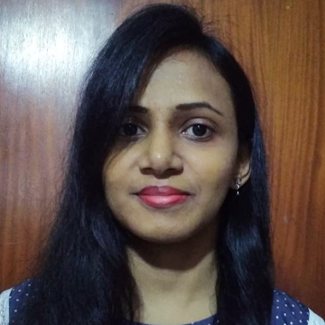

npx run profile --who=naduni
describe('Naduni Warnakulasooriya')
6+ years in QA automation engineering
Builds AI-powered test & root-cause tooling
Fluent in Selenium, Cypress, Playwright, TestNG
ISTQB Foundation Level certified
Ships CI/CD pipelines on GitHub Actions
5 passing — 0 failing

Software Quality Engineer — Test Automation (SDET), building reliable QA frameworks and AI-assisted testing tools.
I'm a Software Quality Assurance Engineer specializing in automation, with hands-on experience across diverse global teams. I hold a BSc in Physical Science from the University of Colombo and a Master's in Information Technology from UCSC.
Over the years I've worked across Hexaware, Virtusa, EY GDS, One Billion Tech and Cenango, contributing to the quality of enterprise systems, mobile apps, and high-traffic web platforms. My toolkit spans Selenium, Cypress, Playwright, Cucumber, SpecFlow, Rest-Assured, and performance tools like JMeter and K6.
Lately I've been focused on AI-assisted QA — building self-healing locators, automated root-cause failure analyzers, and tools that turn raw requirements documents into runnable test frameworks. I enjoy taking ownership of QA initiatives end to end, from framework architecture to CI/CD pipeline design.
Desktop QA tool that uses Claude to generate test cases, frameworks, and runnable scripts directly from uploaded requirements docs. Modular per-module pipeline supports Cypress and Playwright as interchangeable targets, plus self-healing locators and an AI root-cause analyzer baked into every generated framework.
Electron · Node.js · Claude API · Cypress · Playwright
Cypress framework wired into GitHub Actions that inspects failed logs, screenshots, stack traces, and console errors, then classifies failures as product bugs, script issues, or environment/data problems with suggested fixes — posted straight to the PR.
Cypress · GitHub Actions · AI
Cypress framework with a JS self-healing layer that audits scripts and flags only genuinely fragile selectors, cutting down false positives from stylistic preference flags.
Cypress · JavaScript
Page Object Model framework with Excel data-driven testing, Extent Reports, and TestNG for orchestration.
Java · Selenium · Cucumber · TestNG
A chatbot that generates structured test cases directly from a requirements document.
AI · NLP
AI/ML & GenAI enterprise IT automation platform — Hexaware
AI app testingLife insurance management system, New York Life — Virtusa
AutomationInternal work management system — EY GDS
AutomationCall center application for a UAE client — One Billion Tech
Manual QAInvestment management system, Legal & General Group — One Billion Tech
AutomationStorage management with RFID tracking — Cenango
Manual QADating, school-van, body-temp & crowd-tracking apps — Cenango
Manual QAUniversity of Colombo School of Computing (UCSC)
University of Colombo — Applied Maths, Chemistry, Statistics, Computer Science
International Software Testing Qualifications Board
cat contact.json
"email": naduni.cv@gmail.com
"phone": +94 75 080 2211
"location": Maharagama, Sri Lanka
"status": open to new roles
✓ send an email